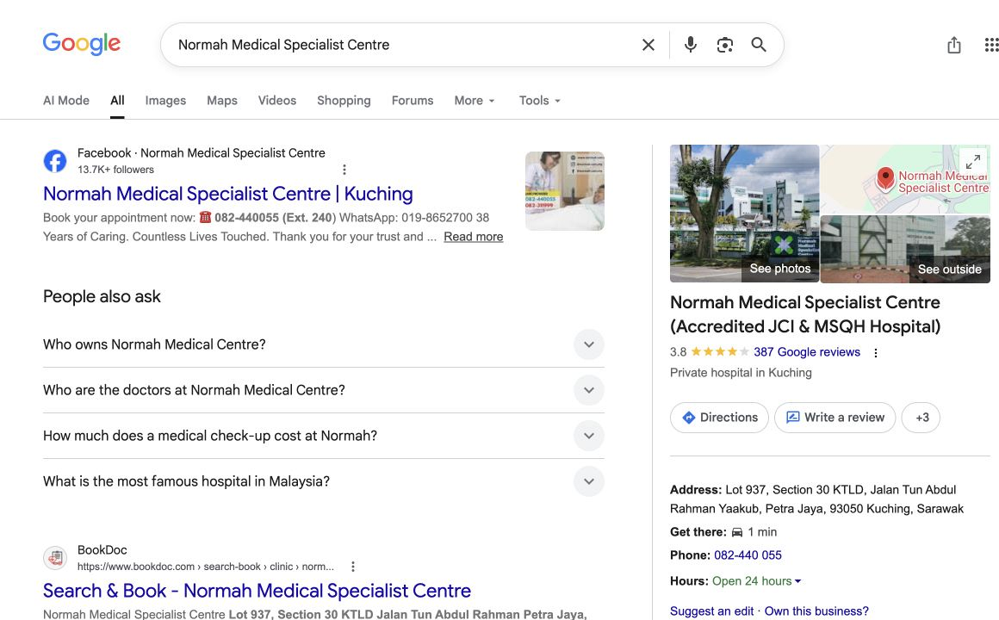
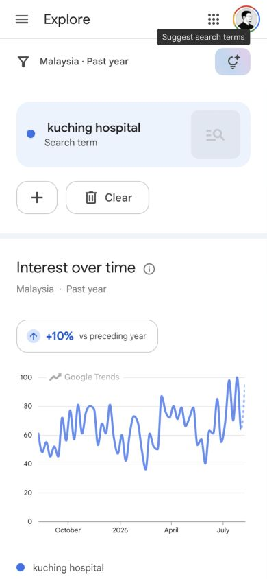
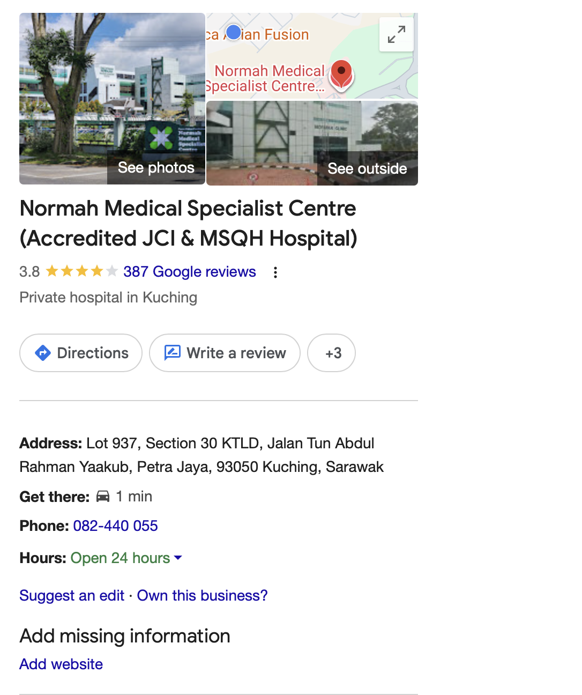

01
Search Engine Optimization
-
What people see01 / 05

On Google,Can they find the official site?
Search tested“Normah Medical Specialist Centre”
-
What appeared02 / 05
The official website was not visibleon Google Search’s first page.
First website result Normah’s Facebook pageObserved from one signed-in desktop search in Kuching on 12 August 2026. Results can vary by user, device and location.
-
What people search03 / 05
People are searching forhospitals in Kuching.But the effect is,

-
Who appears first04 / 05
Other hospital websites appear.Normah’s official site does not.
“hospital kuching”KPJ, Timberland and Borneo appeared in the website results.
“sarawak hospital”Government websites filled most of the first-page results.
Recommended actionCreate clear pages for key services and locations, then improve their titles, descriptions and links so Google can find and rank them.
Normah appeared in Google Places for both searches, but its official website was not among the first-page website results. Checked in Kuching on 13 August 2026.
-
Immediate action05 / 05

Normah is on Google Maps.Its website link is missing.
Recommended actionAdd Normah’s official website address to the Google listing so people can open it directly from Search and Maps.